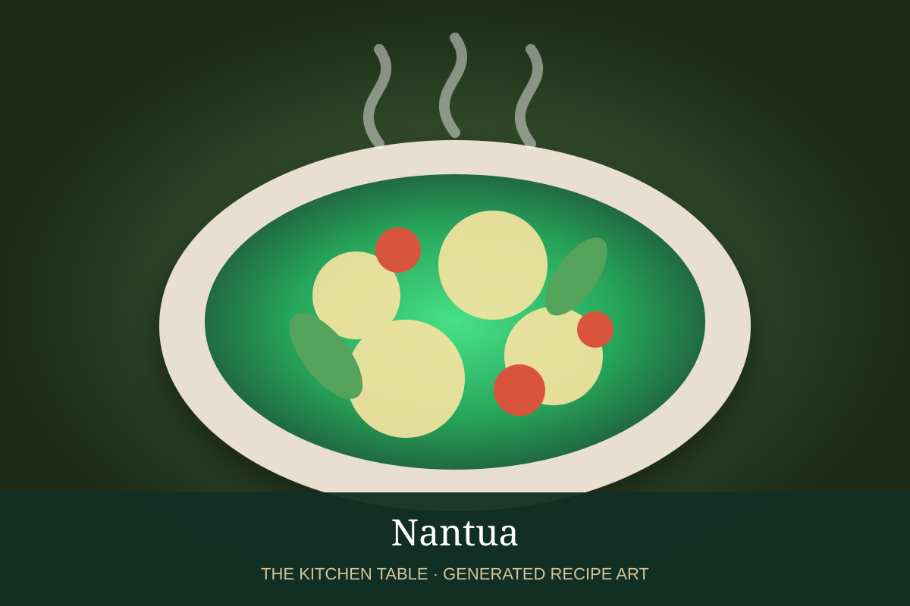

← Béchamel & daughter sauces
SAUCE · BÉCHAMEL DAUGHTER SAUCE
Nantua
A classical Béchamel derivative enriched with cream and crayfish or shrimp butter for fish and shellfish.
30 minMakes about 2 cups

Photo: Albert Ménès / Houra
Ingredients
- 2 cups prepared Béchamel
- 3 tbsp crayfish butter or shrimp butter
- 1/3 cup heavy cream
- 1/4 cup finely chopped cooked crayfish or shrimp tails, optional
- 1 tsp cognac, optional
- Salt and white pepper
Preparation
- Warm the Béchamel gently over low heat.
- Whisk in the crayfish or shrimp butter until fully emulsified.
- Add cream and simmer very gently for 2 to 3 minutes.
- Fold in chopped crayfish or shrimp tails if using.
- Finish with cognac if desired and season lightly with salt and white pepper.
Base sauce: Start with the Béchamel recipe →